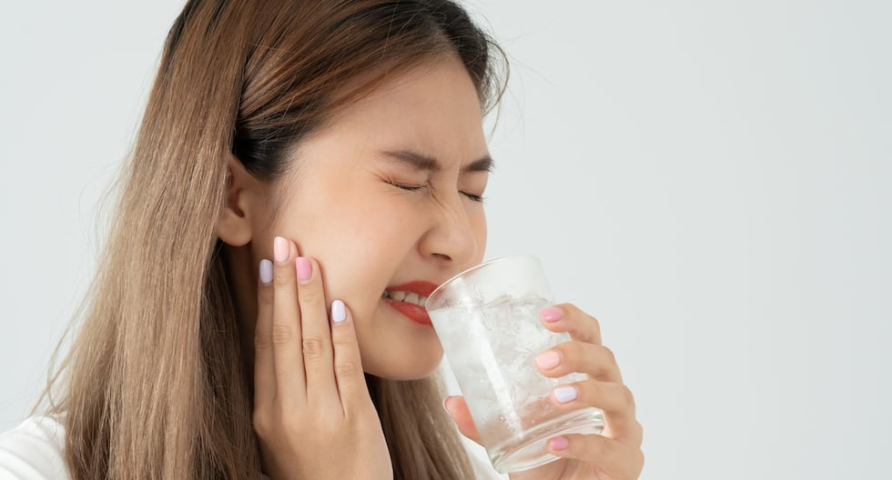
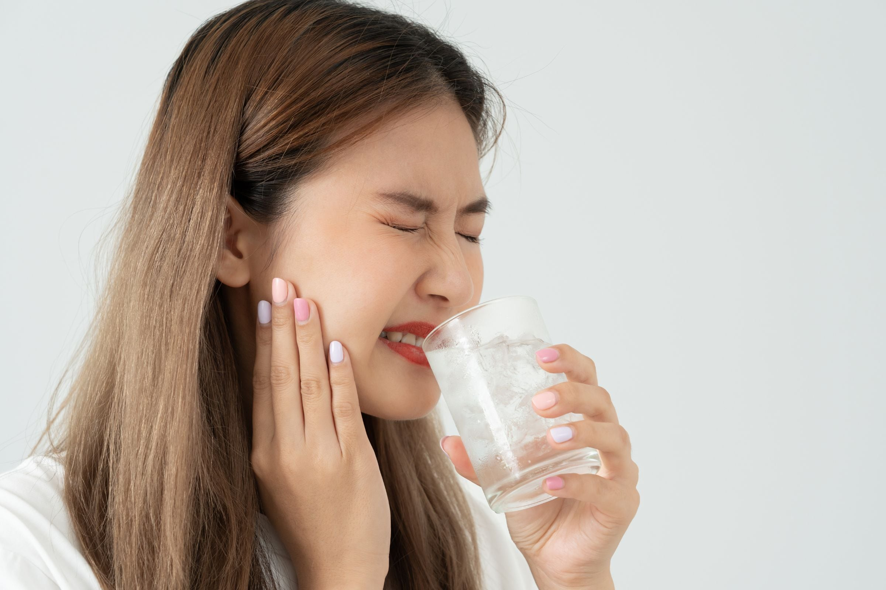

Sensibilidad dental en Perú: 5 consejos para evitar molestias al consumir bebidas frías
Un estudio en Perú halló que el 68,5 % de 600 universitarios evaluados reportó sensibilidad dental. Especialistas recomiendan medidas para reducir molestias ante bebidas frías y ácidas.

Fuente: Diario Correo / Odovtos.
Las altas temperaturas registradas en diversas regiones del Perú, en el contexto del Fenómeno El Niño, han incrementado el consumo de helados, refrescos y bebidas frías. Sin embargo, estos productos pueden provocar molestias en personas con sensibilidad dental, especialmente cuando contienen ácidos que favorecen el desgaste del esmalte.
Un estudio publicado en 2026 en la revista científica Odovtos - International Journal of Dental Sciences encontró que el 68,5 % de 600 estudiantes universitarios peruanos evaluados reportó sensibilidad dental ante determinados estímulos. Los resultados corresponden a la población estudiada y no representan necesariamente a todos los peruanos, pero evidencian una prevalencia alta de esta molestia en el grupo analizado.
¿Por qué las bebidas frías y ácidas provocan sensibilidad dental?
La sensibilidad dental aparece cuando la dentina, una capa ubicada debajo del esmalte, queda expuesta. Esta contiene pequeños conductos que permiten que estímulos como el frío, el calor o determinados alimentos produzcan dolor o molestias. El consumo frecuente de bebidas ácidas, como gaseosas, jugos cítricos o bebidas deportivas, puede contribuir al desgaste del esmalte y aumentar la sensibilidad.
Cuando el esmalte se debilita o las encías se retraen, la dentina queda más expuesta. En ese momento, tomar una bebida helada o morder un helado puede generar una punzada breve pero intensa. Aunque suele ser transitoria, la molestia recurrente puede afectar la calidad de vida y la alimentación.

Las bebidas frías y ácidas pueden desencadenar molestias en personas con dentina expuesta o esmalte desgastado.
5 consejos para reducir la sensibilidad dental
Especialistas en salud bucal recomiendan adoptar hábitos sencillos para prevenir y reducir las molestias:
- Usar pasta dental para dientes sensibles: estas fórmulas contienen compuestos que ayudan a bloquear los conductos de la dentina y reducir la respuesta al frío o al calor.
- Evitar el cepillado agresivo: cepillarse con demasiada fuerza o usar un cepillo de cerdas duras puede desgastar el esmalte y favorecer la retracción de encías. Se recomienda un cepillo de cerdas suaves y técnica suave.
- Moderar el consumo de bebidas ácidas: gaseosas, jugos cítricos y bebidas deportivas pueden erosionar el esmalte. Si se consumen, es mejor hacerlo con comidas y evitar cepillarse inmediatamente después.
- No morder hielo ni alimentos muy duros: estos hábitos pueden generar microfracturas en el esmalte y aumentar la sensibilidad.
- Acudir al odontólogo: si la molestia es frecuente o intensa, es importante una evaluación profesional para descartar caries, fracturas, retracción gingival u otros problemas.
Cuándo buscar atención profesional
La sensibilidad dental ocasional puede manejarse con cambios de hábitos, pero cuando el dolor es persistente, se presenta en un solo diente, o se acompaña de inflamación, sangrado de encías o dolor al masticar, es necesario acudir al odontólogo. Una evaluación oportuna permite identificar la causa y aplicar el tratamiento adecuado, que puede incluir barnices desensibilizantes, restauraciones o tratamiento de encías.

Una buena higiene oral y controles dentales periódicos ayudan a prevenir la sensibilidad dental.
Cuidar el esmalte en temporada de calor
En temporadas de altas temperaturas, es natural aumentar el consumo de bebidas frías. La clave no es evitarlas por completo, sino consumirlas con moderación y mantener hábitos que protejan el esmalte. Usar sorbete para reducir el contacto directo con los dientes, enjuagarse la boca con agua después de bebidas ácidas y esperar al menos 30 minutos antes de cepillarse son medidas simples que pueden ayudar.
La salud bucal es parte del bienestar general. Prestar atención a señales como la sensibilidad dental permite actuar a tiempo y evitar que una molestia leve se convierta en un problema mayor.